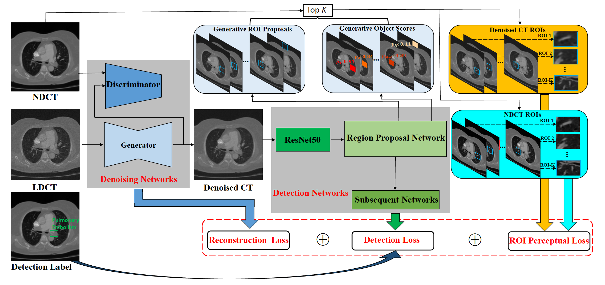

About Me
I am a final year master student in the School of Computer Science and Engineering at University of Electronic Science and Technology of China, and major in Computer Science.
My advisor is Prof. Xiaorong Pu
I earned my bachelor's degree in Electronic Information Science and Technology from Chengdu University of Technology in 2019.
My advisor is Prof. Xiaorong Pu
I earned my bachelor's degree in Electronic Information Science and Technology from Chengdu University of Technology in 2019.
I'm currently working on :
(1) Medical Image Processing, including denoising, detection and so on
(2) Digital Signal Processing, including TEM signal and EEG signal denoising
(1) Medical Image Processing, including denoising, detection and so on
(2) Digital Signal Processing, including TEM signal and EEG signal denoising
Reviewer:
(1) Now, I am a reviewer of Imaging Science Journal.
(2) Now, I am a reviewer of Revista da Associação Médica Brasileira.
(1) Now, I am a reviewer of Imaging Science Journal.
(2) Now, I am a reviewer of Revista da Associação Médica Brasileira.
Publications

Published in TGRS , (IEEE Transactions on Geoscience and Remote Sensing)

Accepted to ACM MM 2021 ,(ACM International Conference on Multimedia)
Published in TGRS , (IEEE Transactions on Geoscience and Remote Sensing)
AI Competitions
I won the 1st place as the first author.
All rights reserved & Last update on Feb, 2022